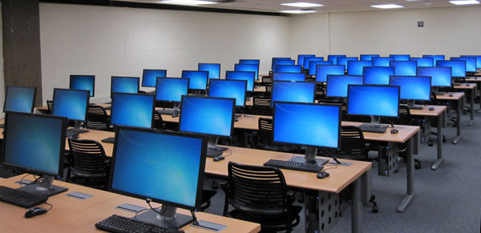

Peminjaman Alat Laboratorium Jadi Lebih Tertata
SIPERALAB membantu mahasiswa melihat peralatan yang tersedia dan mengajukan peminjaman melalui aplikasi web.
Fitur Yang Akan Dikembangkan
- Melihat katalog peralatan.
- Mencari dan memfilter peralatan.
- Mengajukan serta memantau peminjaman.
